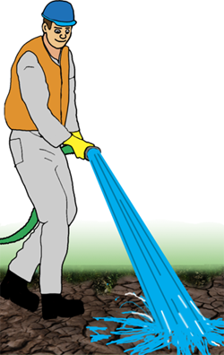

FASE 3 - GROVRENSING
Når all fase 1 og 2 er gjennomført begynner arbeidet med å fjerne det resterende oljelaget som sitter igjen på stein, tang, siv, gress o.s.v.
All forurenset tang, siv og gress fjernes. Er det mulig forsøker en så å spyle den gjensittende oljen ned på sjøen.
Spyling bør ikke gjøres på steder hvor det er siv eller gress, her må forurenset masse fjernes mekanisk.
Benytt ikke høytrykkspumpe med damp eller varmt vann på strender hvor det er sand eller småstein – oljen vil da trenge ned i grunnen.
